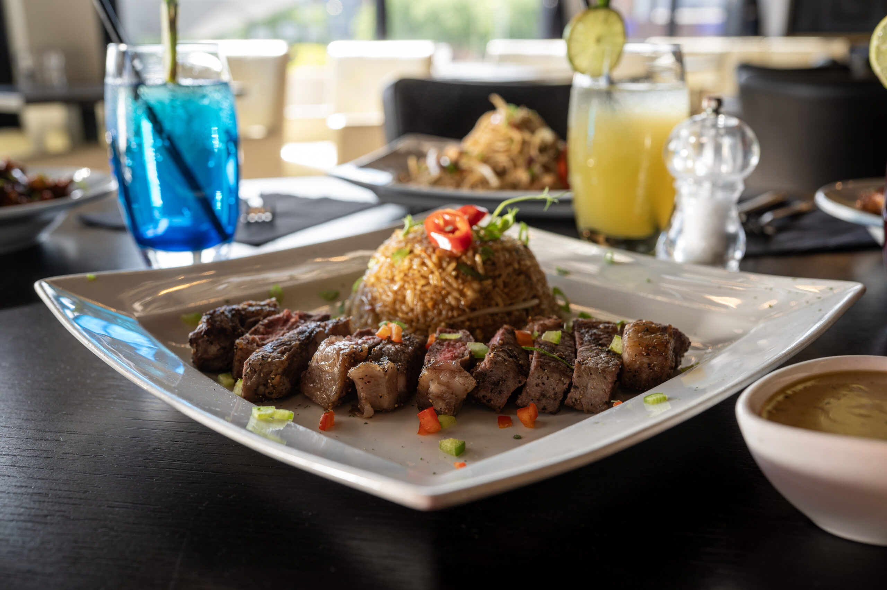
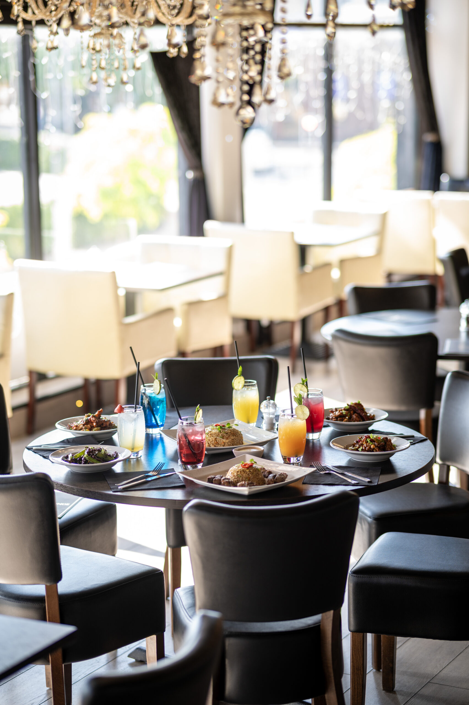

Sirloin 250g
Served with salad, chips and a choice of sauce.

Steak & Lounge brings steaks, burgers and Asian fusion together in its first-floor Leicester restaurant.
Open OpenTableReservations continue on the existing booking provider.

The restaurant website and booking provider use different street numbers. For arrival details and current opening times, please check directly with the restaurant.
Official website: 43 Abbey Street. OpenTable: 41 Abbey Street. Tuesday opening also differs between the restaurant’s published pages.
Open click & collectExternal restaurant-linked ordering provider. No order is placed here.
Menu news and restaurant updates.
Local email signup demo. No subscription is created.